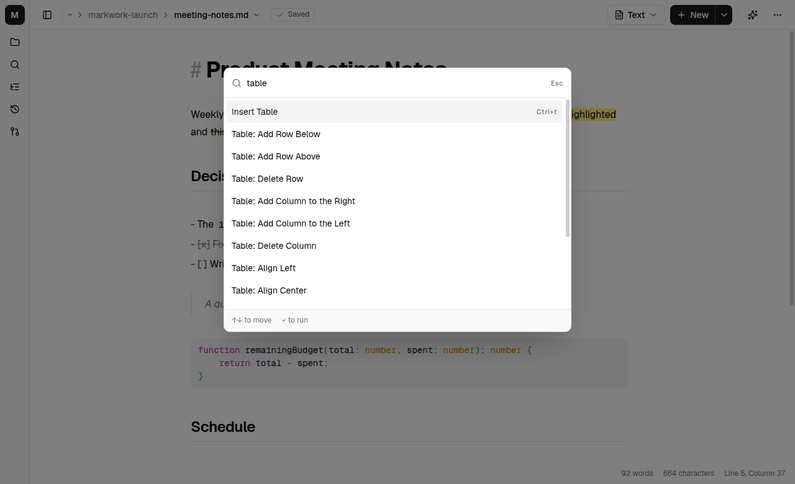
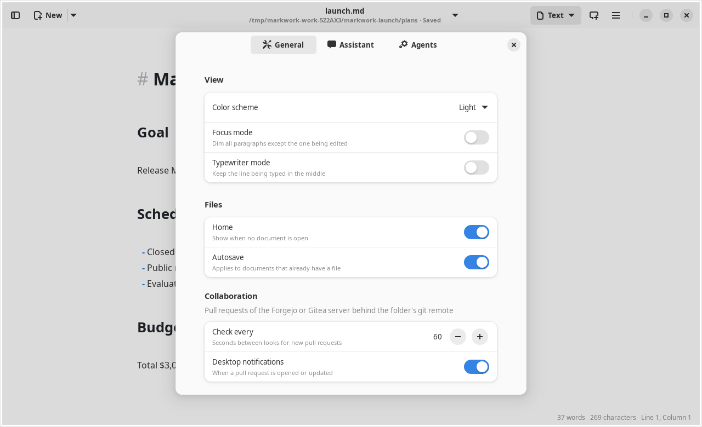
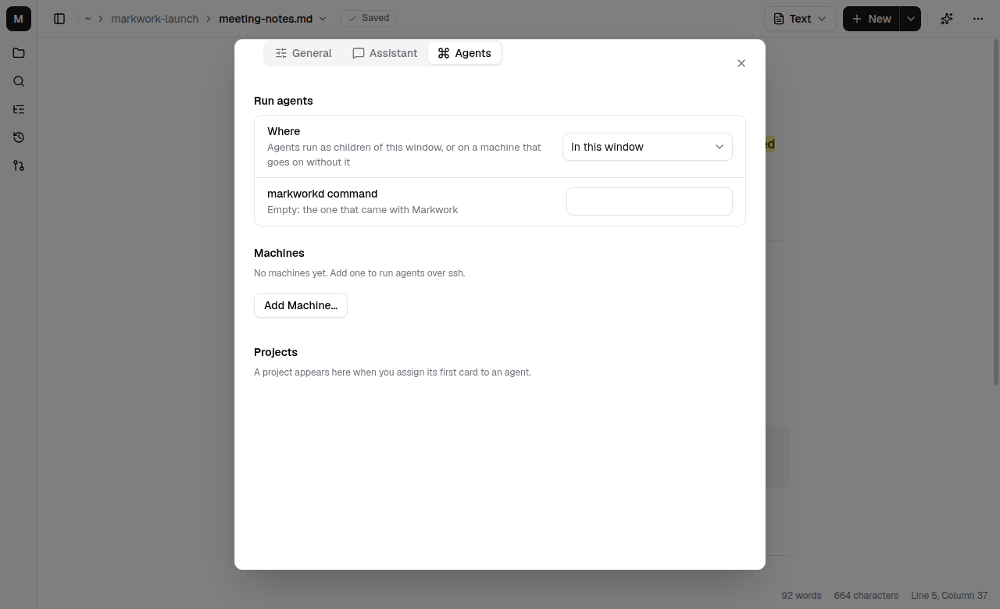

Reference
Settings
Settings are saved automatically when you change them from the menu or a panel. There is no account and no syncing to a server.
File locations
| File | Contents |
|---|---|
markwork-electron/settings.json in the config folder | The app settings (~/.config on Linux, ~/Library/Application Support on macOS, %APPDATA% on Windows) |
| The system keyring | The DeepSeek API key, and the access token of each Forgejo/Gitea server |
~/.config/markwork/forge-<server>.token | The token of that server when the keyring is not available (mode 0600) |
~/.config/markwork/deepseek.key | The API key when the keyring is not available (mode 0600) |
<work folder>/.markwork/chats/ | Conversation history, plans, and the action journal |
What the settings hold
Open the Preferences dialog (Ctrl+,) for the color scheme, focus and typewriter modes, autosave, and the assistant model. Any command can also be searched with the Command Palette (Ctrl+Shift+P).
- The color scheme (follow the system, light, or dark), and the sidebar and the sidebar tab that was last chosen
- The last folder and the tabs with files that are open (order, active tab, cursor position), including the Home tab
home: show Home when no document is open;recent-files: the 30 files that were opened lastvisual: the visual editor (on), or the live view with the syntax on the cursor line (off); focus mode, typewriter mode, and autosave; the window size- The Assistant panel: open or not, the model, and thinking mode
projectsandproject-options: the mapping of project name → folder for external harnesses, and its options. These (andmachine-projects) are kept for each work folder separately: a folder opened for the first time starts with a copy of the lists of the folder before it, and Home, the Recent list, and the agents list only show what belongs to the open folder. The machines themselves are shared by every folder.- Agents (Preferences → Agents):
harness-machine, where harnesses run (in this window, on this computer through markworkd, or on a machine you added),machines, the SSH host of each machine,machine-projects, the project folders on those machines, anddaemon-command, the markworkd command on them when it is not on the non-interactive PATH. See markworkd - Collaboration (Preferences → General → Collaboration):
forge-poll-seconds, how often to look for pull requests (30 to 3600 seconds), andforge-notify, whether a new or updated pull request raises a notification. The server and the repository come from the git remote of the folder; the token is not in the settings. See Collaboration
The API key and the access tokens of the servers are never written to the settings.
In a narrow window (below about 900 pixels), the Assistant panel floats over the editor instead of docking on the right; below about 600 pixels the sidebar does too. The panels are closed when the window narrows, and your panel choices are restored when the window is widened again.
The command palette
Ctrl+Shift+P opens a list of every command with its shortcut. Type a few words in any order (table row) and press Enter to run the first match.

Preferences
Ctrl+, opens Preferences with three pages: General (color scheme, the visual editor, focus and typewriter modes, Home, autosave, and how often to look for pull requests), Assistant (the model, thinking mode, and whether conversation history is saved), and Agents (where agents run, the machines, and the projects).


Default values
| Setting | Default |
|---|---|
| Model | deepseek-flash, without thinking mode |
| The Assistant panel | Closed |
| Save conversation history | On (when a folder is open) |
| Sidebar | Open on the Outline tab |
| Dark mode | Follows the system theme |
| Visual editor | On |
| Focus / typewriter | Off |
| Autosave | On |
| Home | On |
| Where agents run | In the Markwork window |
| Check for pull requests | Every 60 seconds, with notifications on |
| Window size | 1100 × 760 pixels |
The API key
Markwork looks for the API key in the DEEPSEEK_API_KEY environment variable, then in the keyring, then in the fallback file. Enter or replace the key from the gear icon in the Assistant panel.